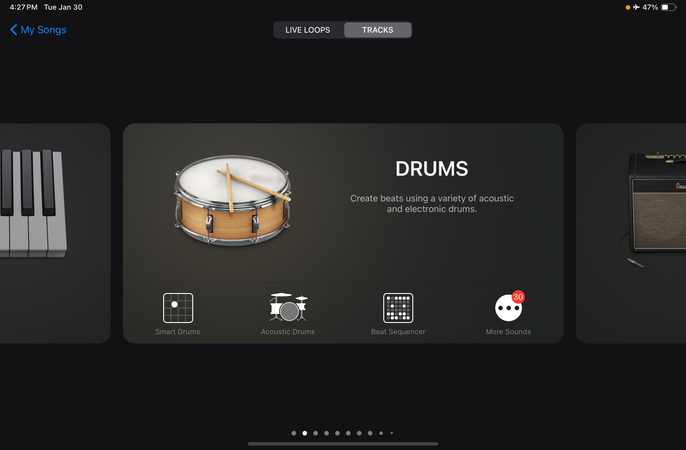
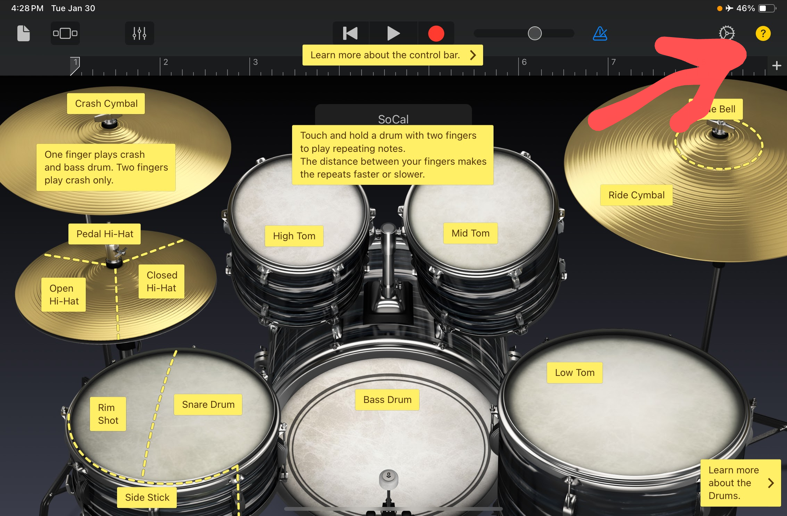
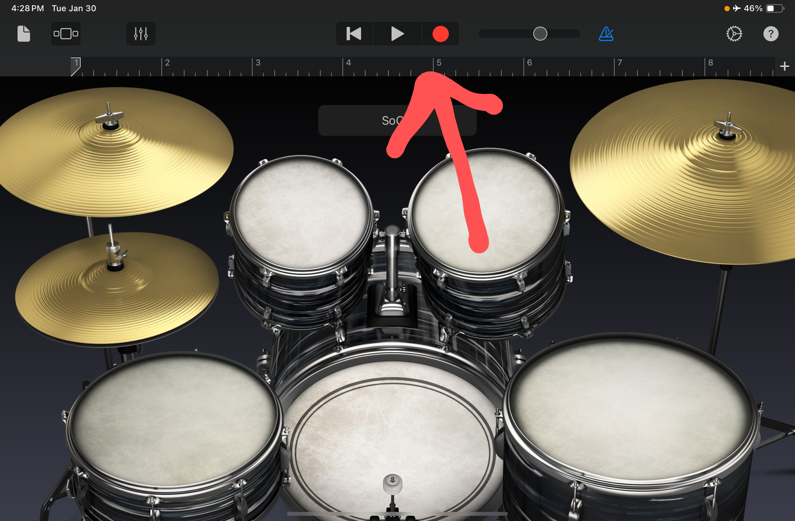
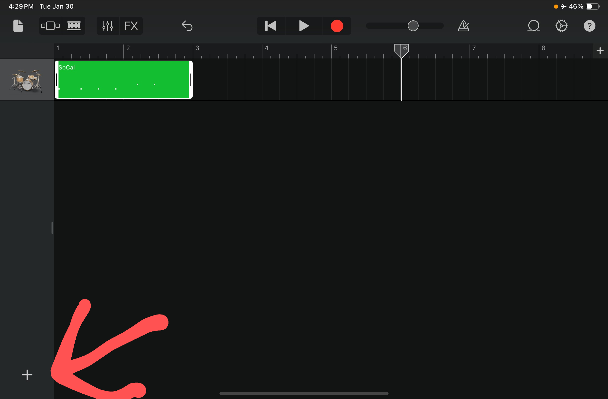
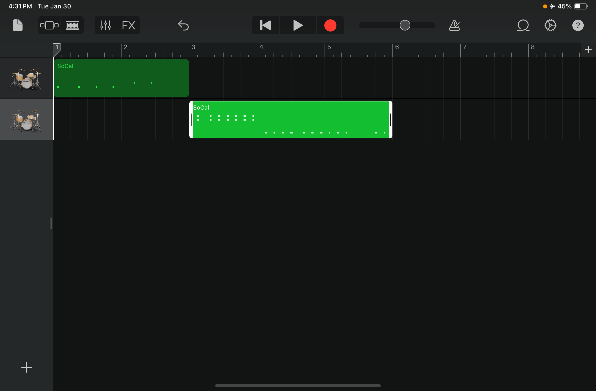
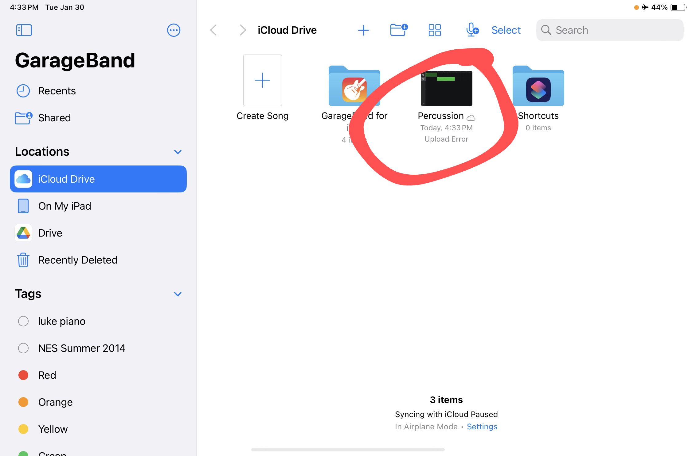

Do It! GarageBand: Rhythm of Ratios
 The Challenge
The Challenge
Your challenge is to compose music using Math! You will compare ratios, identify equivalent ratios, and translate them into a drum beat you play in GarageBand.
Project Steps
-
Ratio Rhythm Patterns
-
Keeping the Beat
-
Record It
Ratio Rhythm Patterns
In the table below, you will use different ratios to create rhythmic patterns for percussion instruments. Each beat is a part of the ratio. So, in a 2:3 ratio, two beats represent one part, and three beats represent the other. For example, the ratio 2:3 could play two drumbeats followed by three shaker beats (boom boom, shake shake shake). This reflects the proportion of 2 parts "boom" to 3 parts "shake." If you had a 5:6 ratio you could play five drumbeats followed by six tambourine beats (boom boom boom boom boom, ting ting ting ting ting ting). You will fill this in in the next step.
Keeping the Beat
Now you will modify the original rhythmic pattern you created while maintaining the same proportion. For example, for the 2:3 ratio, you might have four "boom" beats and six "shake" beats (boom boom boom boom, shake shake shake shake shake). This still represents the 2:3 ratio, just with a larger "beat group."
Identify 2 equivalent ratios for each of the ratios given and corresponding rhythmic patterns. You can write down the rhythmic patterns on the Keeping the Beat document using symbols or letters (e.g., D for drum, S for shake) if you wish. The first one is done for you. You will upload this for your project submission.
Record It
Now, using GarageBand, you will use the drum tracks to adjust the length of each beat to match the ratios/rhythmic patterns. You will first record the original ratio patterns and then record equivalent patterns.
Step 1
Choose Create a Song in GarageBand.

Step 2
Find and Select Drums.

Step 3
Find and Select, Acoustic Drums.
.PNG "select acoustic drums")
Step 4
Click on each part of the drum setup to learn information about each part.

Step 5
Choose the red record button to record your first ratio.

Step 6
When you are done recording, click on the Tracks button.

Step 7
Your recording will display. Click on the + sign to record your next ratio.

Step 8
You can have the ratios all play at the same time or you can move them to play separately. You can move the recording around to figure out what sounds the best!

Step 9
When you have recorded all of your ratios, you will need to upload them to a safe location to use for your project submission. Make sure to rename the file so you can find it later!

Step 10
Choose SHARE

Step 11
Choose to send your project.

Step 12
Send it to your teacher! This is part of your project submission.